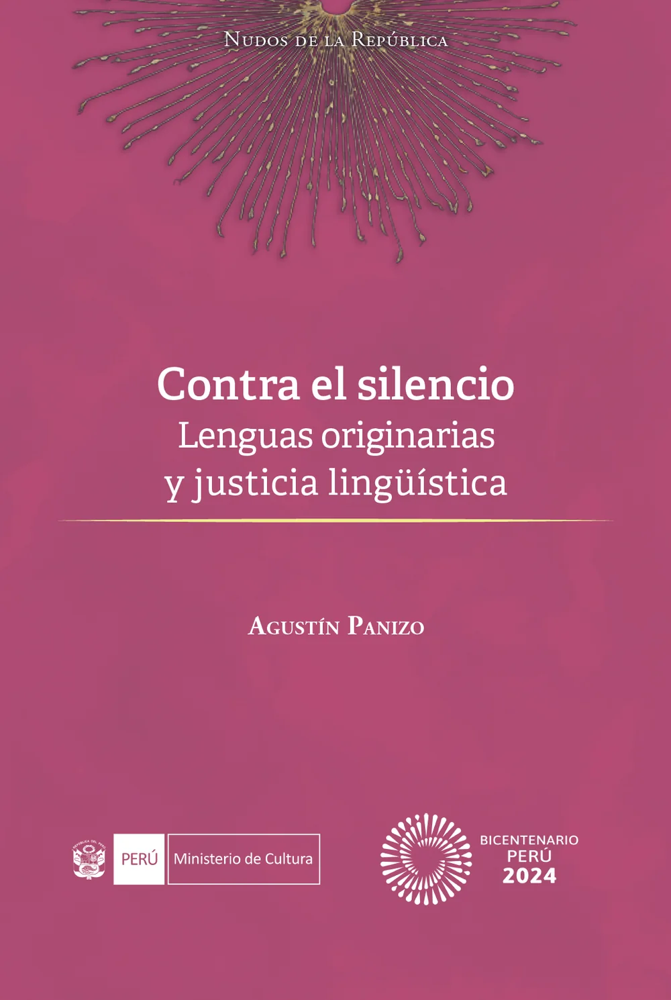
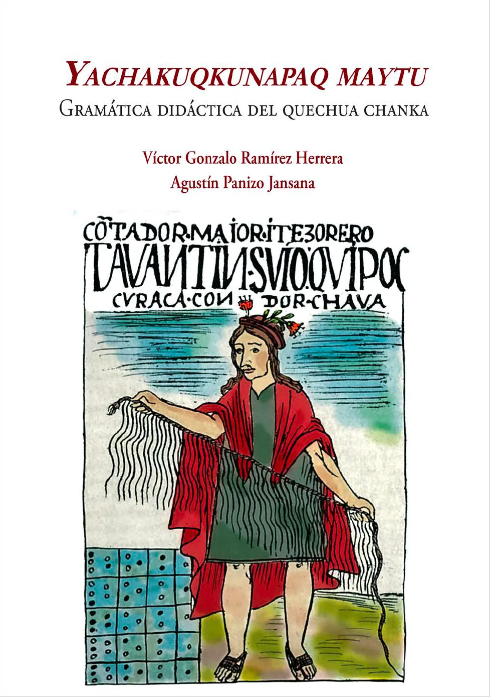
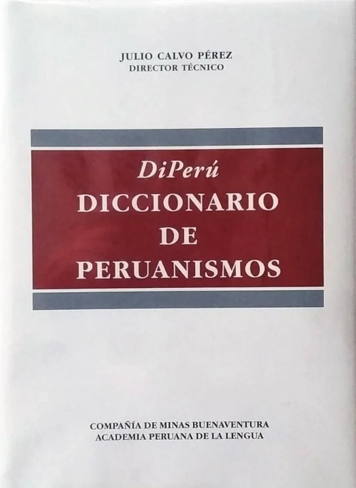
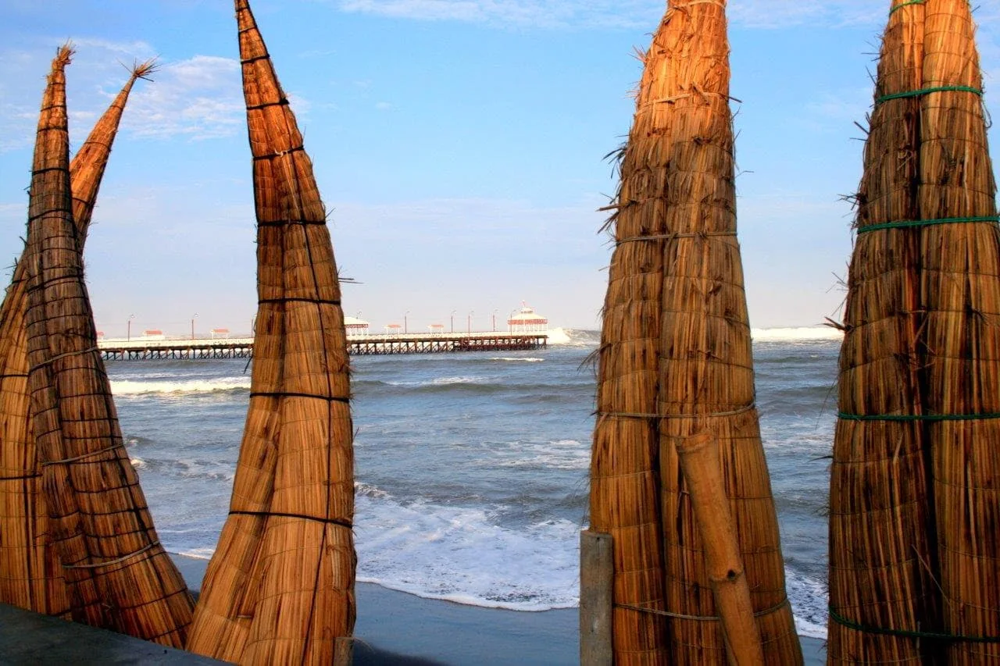
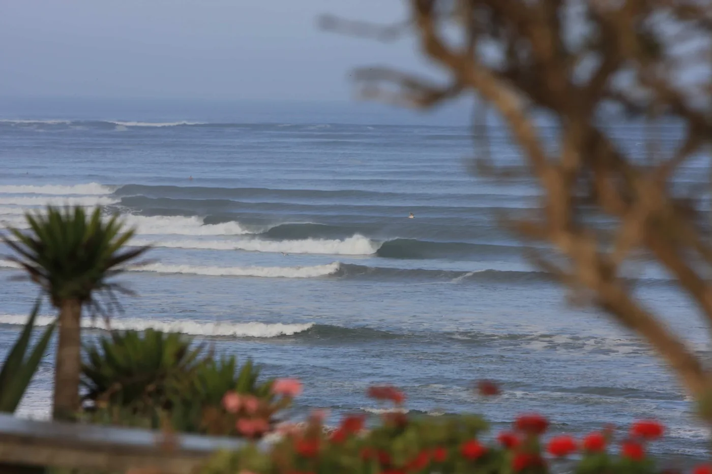
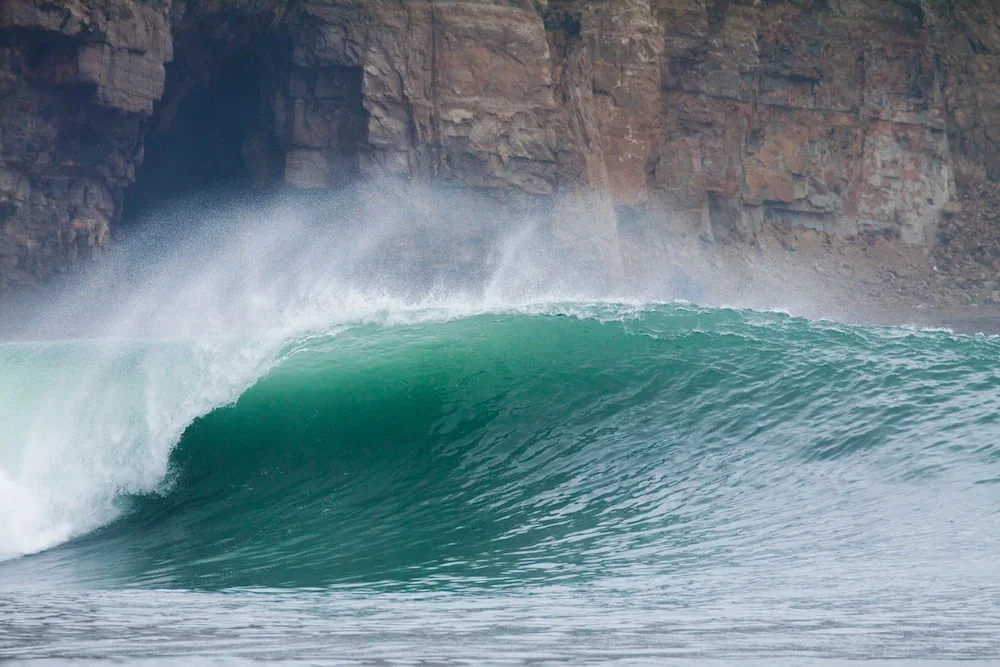

Libros
Libros y obras en coautoría

Contra el silencio. Lenguas originarias y justicia lingüística
Autor · Proyecto Especial Bicentenario.

Yachakuqkunapaq maytu. Gramática didáctica del quechua chanka
Coautor · UTEC Press.

DiPerú. Diccionario de peruanismos
Coautor y miembro del equipo de redactores.
Artículos y capítulos
Entre el último hablante y el Estado: el caso de la lengua amazónica taushiro (Perú)
Agustín Panizo, Gerardo García y Rosaleen Howard. Capítulo en obra colectiva sobre desplazamiento lingüístico y revitalización.
Proceso de Consulta Previa del Reglamento de la Ley de Lenguas Indígenas
Agustín Panizo. pp. 18–19.
La angustia del contacto lingüístico en Arguedas
Agustín Panizo y Luis Andrade Ciudad. En actas publicadas, tomo II, pp. 151–164.
Aportes de Luis Fernando Lara a la lexicografía hispanoamericana en De la definición lexicográfica
Agustín Panizo. pp. 117–187.
Participación en obras lexicográficas y de referencia
Diccionario de la lengua española, 23.ª edición
Participación en trabajos lexicográficos preparatorios desde la Academia Peruana de la Lengua.
Nueva gramática de la lengua española. Versión básica
Colaboración en los trabajos de preparación de la obra.
Diccionario de americanismos
Integrante de la Comisión de Revisión.
Surf, cultura marítima y divulgación
Serie sobre surf, historia y patrimonio costero
Serie de diez artículos escritos por Agustín Panizo y publicados periódicamente en Actualidad Ambiental. Los textos abordan la historia del surfing peruano, las comunidades vinculadas a sus principales rompientes, el patrimonio marítimo y cultural y los problemas de conservación que afectan al litoral.
3 de 10 artículos publicados
Huanchaco: 3500 años de surfing
Sobre la continuidad entre la tradición de los caballitos de totora y el surfing contemporáneo, y sobre los desafíos de conservación del litoral de Huanchaco.
Fotografía de portada: Carlos Antonio Ferrer
Leer artículo ↗
Chicama: una ola excepcional… y vulnerable
Una mirada histórica y ambiental a una de las rompientes más extraordinarias del mundo y a los equilibrios costeros de los que depende su conservación.
Fotografía de portada: Chicama Boutique Hotel
Leer artículo ↗
La Herradura: destrucción y resurgimiento de la joya de Lima
Historia de la célebre rompiente limeña, su destrucción en 1983 y el proceso de recuperación impulsado durante las décadas posteriores.
Fotografía de portada: Javier Larrea
Leer artículo ↗La serie comprende siete artículos adicionales que serán incorporados aquí conforme sean publicados.